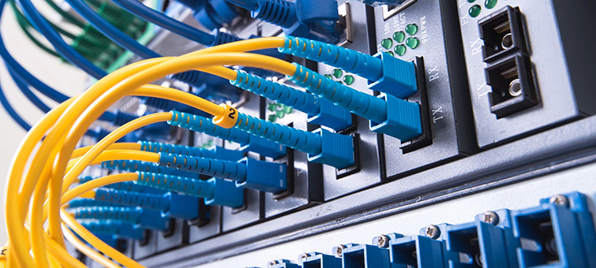
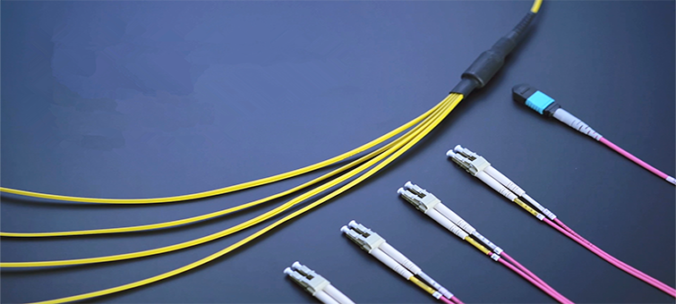
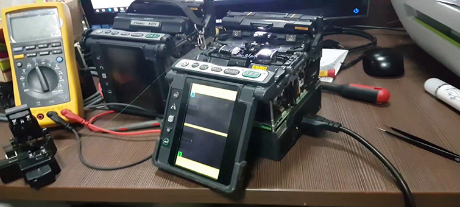

Backbone Cabling
Backbone cabling links telecommunication closets, terminates cable elements,
and reconnects them via jumpers, termination blocks, or cables
to other cabling elements. It runs between wiring closets and
the equipment room, using UTP, STP, or Fiber Optics based on
the application and distance.
Our specialized backbone cabling services include:
- Cabling between equipment rooms and building entrances
- Cabling between the buildings
- Vertical connections between the floors
- Building grounding and Bonding Requirements


Fiber Optic Services
Fiber Optic as your backbone enhances bandwidth for voice and data infrastructures, offering a fast and secure way to connect floors, offices, and buildings. Our services encompass fiber optic network design and field installation, both indoor and outdoor. Our skilled staff has extensive experience in technical design and installation.
Fusion Splicing
- Expert Fusion and Mass Fusion Splicing
- OPGW, ADSS and Duct Cable
- Single Mode, Multi-Mode& Ribbon fiber spicing
- Standard/Dispersion Shifted/Specialty Fiber
- Active System "Hot Cut" Splicing
- Aerial Splicing "In Bucket" to 100 feet
- Transition and Termination Splicing
- Hot Transmission and Distribution Environment
- Manhole or Direct Buried Splice
- Hot URD Distribution Manholes
